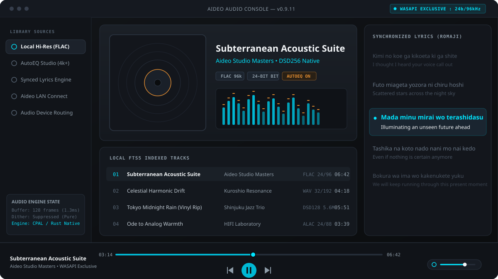
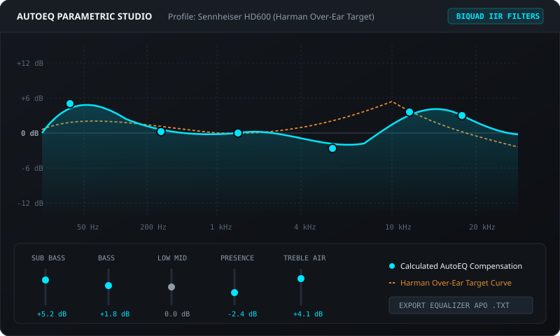
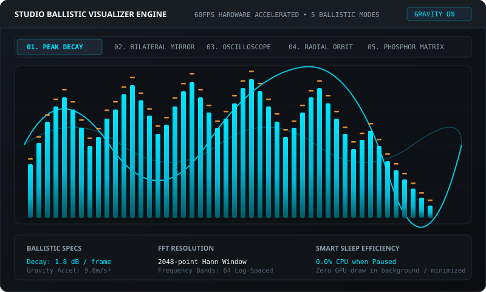

Bit-perfect desktop listening. Direct hardware control.
Aideo is a dedicated Windows audiophile player designed for pure playback. It routes direct bitstreams to your external DAC via WASAPI Exclusive mode, auto-corrects 4,000+ headphones with AutoEQ biquad filters, and delivers synchronized Romaji lyrics without cloud lock-in.

Studio Ballistic Visualizer Engine
Hardware-accelerated 60fps audio analysis. Switch between ballistic modes with falling peak caps and dynamic gravity decay physics.
Designed for fidelity, control, and responsiveness.
Every subsystem in Aideo is built to serve listening accuracy. We replaced web audio wrappers with native Rust audio threads and bloated browser backends with instant local SQLite indexing.
WASAPI Exclusive Bit-Perfect Streaming
Standard Windows media players route sound through the Windows Audio Engine mixer, which forces sample-rate conversion, introduces digital limiter distortion, and degrades dynamic range. Aideo claims exclusive hardware ownership over your sound card or USB DAC.
- 01 Mixer Bypass: Direct memory access buffer eliminates OS mixer resampling noise.
- 02 Unity Gain Path: Audio frames pass bit-for-bit to DAC hardware with zero added dither.
- 03 Lossless Resolution: Native support for 16, 24, and 32-bit PCM up to 384kHz and DSD.
4,000+ AutoEQ Profiles
Search your specific headphone or IEM model to automatically load scientifically-calibrated biquad IIR parametric equalizer curves tuned to Harman or neutral targets.
- ✓ Sennheiser, Moondrop, Beyerdynamic, Hifiman, Sony
- ✓ 5 and 10-Band real-time parametric biquad DSP
- ✓ Export configuration to Equalizer APO .txt format
Romaji Karaoke & Desktop HUD
Synchronized lyric scrolling with 1-click Japanese Kanji-to-Romaji transliteration and English translations. Includes a transparent click-through HUD for fullscreen gaming.
- ✓ Auto-fetch from LRCLIB & Musixmatch APIs
- ✓ Local .LRC file pairing & timeline synchronization
- ✓ Click-through borderless window with zero input lag
Offline-First Library with SQLite FTS5 Search
Your collection remains your own. Aideo indexes large music libraries (50,000+ files) in seconds using embedded SQLite with Full-Text Search (FTS5). Search by artist, album, composer, codec, or bit-depth with sub-10ms response times.
- 01 Zero Cloud Dependence: 100% functionality without internet connection.
- 02 Lightweight Footprint: Consumes under 50MB RAM at idle, 0.0% CPU when paused.
- 03 Aideo Connect: Control playback from your smartphone over local home Wi-Fi via QR code with no app install.
Direct-to-DAC Signal Pipeline
Inspect how audio travels through Aideo. By separating UI rendering from the native audio worker thread, playback never stutters, drops frames, or suffers UI event loop interference.
Symphonia Lossless Decoding
Pure Rust decoder reads FLAC, ALAC, WAV, and DSD into a lock-free ring buffer.
Lock-Free ConcurrencyBiquad DSP & True Bypass
When AutoEQ is active, 64-bit float biquad filters shape response curves. In Bit-Perfect mode, the DSP stage is completely bypassed with unity gain.
64-bit IEEE 754 Floating PointWASAPI Exclusive Hardware Endpoint
CPAL driver streams audio directly to the DAC hardware buffer, locking sample rates and preventing OS limiter compression.
Exclusive Stream Direct
Explore Every Interface Subsystem
Designed with dark obsidian aesthetics, high visual hierarchy, and tactile hardware controls.

Precision Headphone Equalization
Most headphones have non-linear frequency peaks that veil micro-details. AutoEQ calculates the exact inverse acoustic profile to align your headphones to scientifically validated targets.
- ✓ Instant parametric biquad calculation with Q-factor width control
- ✓ Real-time pre-amplification gain compensation to prevent digital clipping
- ✓ Full export support for Equalizer APO config text files

Sing Along in Any Language
Aideo integrates automatic transliteration. For Japanese tracks, Kanji and Kana are converted into phonetic Romaji in real time, accompanied by synchronized English translations.
- ✓ Sub-millisecond lyric synchronization with word-by-word highlights
- ✓ Click-through transparent HUD for gaming and productive multitasking
- ✓ Automatic matching from LRCLIB open database and local .LRC files

Control Music From Your Phone
Listen from your couch or sound lounge. Enable Aideo Connect in settings, scan the on-screen QR code with your smartphone, and control playback, volume, and playlists directly in your mobile browser.
- ✓ No iOS App Store or Android Play Store app installation required
- ✓ Operates strictly over your local Wi-Fi LAN without internet servers
- ✓ DLNA / UPnP Hi-Fi streaming support to smart speakers and AV receivers

True Audio Ballistics
Rather than erratic digital noise, Aideo applies calibrated gravity decay constants modeled on physical VU meters and studio spectrum analyzers.
- ✓ 5 display modes: Peak Decay, Bilateral, Ribbon, Orbit, Phosphor Matrix
- ✓ Dual stages: 64px compact bar or 140px full panoramic stage
- ✓ Smart sleep efficiency: 0.0% CPU when paused, zero background draw
Engineered differently from day one.
Comparing Aideo against conventional electron-based players and legacy utility players.
| Capability / Specification | Aideo Music Player | Legacy Players (foobar2000) | Electron Players (Spotify / Tidal) |
|---|---|---|---|
| Core Architecture | Tauri v2 + Rust Native Engine | Win32 C++ (Legacy) | Chromium / Node.js (Electron) |
| Idle Memory Footprint | ~45 MB RAM | ~25 MB RAM | 350 MB to 750 MB RAM |
| WASAPI Exclusive Direct Mode | Native (Zero Setup) | Requires Component Plugin | Not Supported / Limited |
| AutoEQ Database Integration | Built-in (4,000+ Headphone Models) | Manual Plugin Configuration | Unavailable |
| Synchronized Romaji Lyrics | 1-Click Transliteration + HUD | Third-party scripts | Standard English/Roman only |
| LAN Mobile Remote Control | Built-in (QR Code / No App Needed) | Third-party HTTP server plugin | Cloud account required |
| User Telemetry & Tracking | Zero Telemetry (100% Offline) | Zero Telemetry | Continuous User Profiling |
| Open Source License | GNU GPL v3.0 (Inspectable) | Proprietary Freeware | Proprietary Closed Source |
Technical Specifications
Comprehensive support for modern high-resolution lossless audio standards.
Supported Audio Formats
Lossless, uncompressed, and high-resolution stream formats:
ALAC (Apple Lossless)
WAV / AIFF (Linear PCM)
DSD (DSF / DFF via DoP or PCM conversion)
MP3, AAC, OGG Vorbis, Opus
Audio Hardware Engine
Direct hardware interface and DSP specifications:
DirectSound Shared Mode Fallback
Lock-Free Symphonia Ring Buffer
Parametric 10-Band Biquad Filter Bank
2048-Point Hann FFT Spectral Analysis
System Requirements
Minimum specifications for smooth 60fps playback:
Architecture: 64-bit x86_64
Memory: 4GB RAM (Aideo uses <50MB)
Disk Space: 250MB free space
Output: External DAC or Stereo Audio Card
Download Stable Release v0.9.11
Free, open source, and verified safe. Choose your preferred distribution package.
Windows Installer (.exe)
Standard standalone desktop setup. Automatically configures file associations and desktop shortcuts.
Download Installer (.exe)SHA256: Available on GitHub Release
Portable Archive (.zip)
Zero installation required. Extract to any folder or run directly from a high-speed USB flash drive.
Download Portable (.zip)SHA256: Verified against GitHub Release
Windows Terminal (winget)
Install and update seamlessly via Windows Package Manager command prompt.
winget install Alirul.AideoMusicPlayer
Auto-updates supported
Frequently Asked Questions
Everything you need to know about bit-perfect playback, AutoEQ, and privacy.
Aideo connects to your audio device using WASAPI (Windows Audio Session API) in Exclusive Mode via the CPAL Rust audio library. When active, Windows grants Aideo exclusive direct hardware access, preventing the Windows Shared Audio Engine from resampling sample rates, applying limiter dynamic range compression, or injecting dither noise.
AutoEQ is an open-source database containing laboratory-measured frequency response curves for more than 4,000 headphone and in-ear monitor (IEM) models. Aideo integrates this database directly, allowing you to select your headphone model and automatically apply corrective parametric biquad filters to achieve standard Harman or neutral acoustic target curves.
Aideo includes a built-in lightweight local web server. When toggled on, your computer generates a local IP address and QR code. Scanning this with your phone's camera opens an interactive web remote in your browser. You can play, pause, seek, adjust volume, and switch tracks over your home Wi-Fi network without installing any mobile app.
No. Aideo has a zero-telemetry policy. Your listening history, playlists, search queries, and local audio file paths are stored exclusively in your local SQLite database on your own computer. We do not use Google Analytics, Sentry, or third-party telemetry tools.
While foobar2000 and MusicBee are legendary players, they require manual installation of complex external plugins to achieve WASAPI Exclusive playback, AutoEQ compensation, or lyrics syncing. Aideo bundles all of these features out of the box with modern fluid visuals, synchronized Japanese Romaji transliteration, and a mobile Wi-Fi remote in a lightweight Tauri v2 architecture.
Aideo supports all standard lossless and lossy formats: FLAC, WAV, ALAC, AIFF, DSD (DSF/DFF), MP3, AAC, and OGG Vorbis. Sample rates from 44.1kHz up to 384kHz and 16, 24, or 32-bit audio are decoded natively using Symphonia.